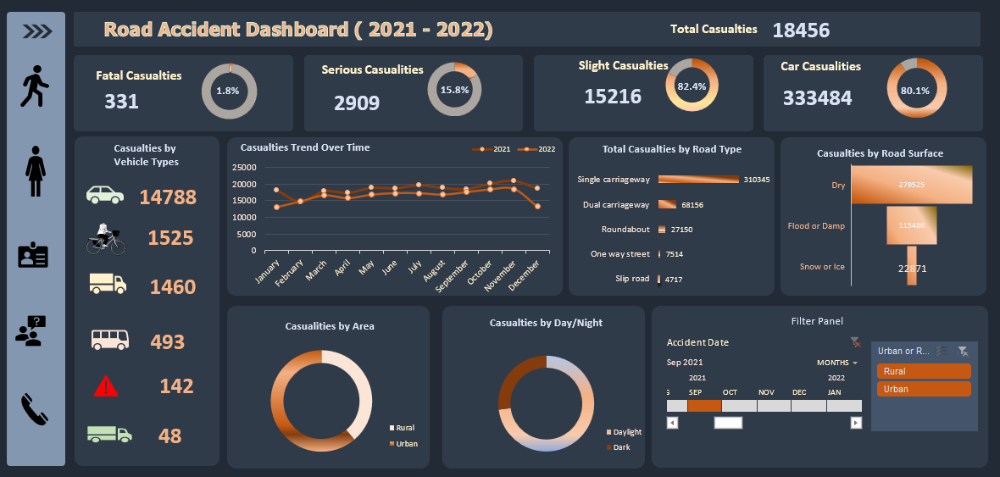

Road Accident Data Analysis Dashboard
A comprehensive analysis of road accidents to identify patterns, improve safety measures, and provide actionable insights for urban planning and traffic management.
Data Visualization
Excel
Power BI
Data Analytics
Key Metrics (2021-2022)
Total Casualties
417.9K
Fatal Accidents
1.7%
Serious Accidents
14.5%
Slight Accidents
83.8%
Problem Statement & Goal
The increasing frequency of road accidents poses a significant threat to public safety and infrastructure. The goal of this project was to analyze historical road accident data to identify high-risk areas, peak accident times, and contributing factors like weather and road conditions. By visualizing these patterns, we aim to provide data-driven recommendations for traffic interventions and safety policy improvements.
The Methodology
Data Cleaning & Transformation
Using Power Query, I handled missing values in 'Road Surface Conditions' and standardized 'Accident Severity' labels. I also extracted date features (Year, Month, Day of Week) from the accident timestamps to enable temporal analysis.
Dashboard Showcase
Main Overview

Severity Analysis

DAX Logic Highlight
-- Calculate Total Casualties for the Current Year
Total Casualties CY =
SUM('Road Accident Data'[Number_of_Casualties])
-- Calculate Year-over-Year (YoY) Growth
Casualties YoY Growth =
VAR PreviousYear = [Total Casualties PY]
RETURN
DIVIDE([Total Casualties CY] - PreviousYear, PreviousYear, 0)
-- Fatal Accident %
Fatal % =
DIVIDE(
CALCULATE([Total Casualties], 'Road Accident Data'[Accident_Severity] = "Fatal"),
[Total Casualties],
0
)
Safety Recommendations & Impact
The analysis identified that 75% of fatal accidents occur on single carriageways and during peak evening hours (4 PM - 7 PM). Key recommendations include: 1) Increasing patrol presence and lighting in identified high-risk rural clusters. 2) Launching public awareness campaigns focused on driving safety during adverse weather conditions. 3) Implementing traffic calming measures on high-speed road sections with high accident frequencies.
Tools Used

Excel

Power BI

SQL

Power Query
Explore Further
Dive deeper into the project's details.